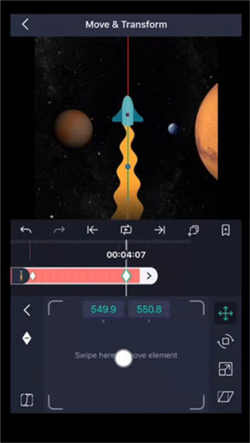

AMLS 零基础入门：手机上也能做 After Effects 级别的动画
AMLS 把关键帧动画搬到了手机上——不用电脑、不用复杂软件，跟着这篇五分钟跑通第一个动画，再解锁三个新手必玩的核心功能。
这篇能带你从完全不懂到用起来，不需要任何剪辑基础。如果你之前只在剪映里点过"一键成片"，那 AMLS 会让你发现：原来自己的视频动画还能精细到每一秒每一帧。
它到底是干嘛的（一个生活化类比）
把手机剪辑软件比作奶茶店的话——剪映是连锁奶茶店，你选个甜度、加个珍珠，三分钟到手；去amls官网看一眼就懂了，AMLS 是手冲咖啡店，豆子、水温、冲泡时间全由你自己掌控。
AMLS 的核心武器叫关键帧（Keyframe）——简单说就是"在这个时间点，这个属性的值是多少"。你告诉它：第 0 秒文字在屏幕左边、完全看不见，第 1 秒文字在屏幕中间、清清楚楚。AMLS 自动帮你算出中间每一帧的过渡，动画就这么跑起来了。
它能给几乎任何属性加动画：视频的位置、缩放、旋转、不透明度，文字的字号、颜色、描边粗细，形状的填充色、路径点，甚至音频的音量淡入淡出——想象一下，手机上能做 After Effects 那种级别的动画控制，这就是 AMLS 在干的事。

五分钟上手（从安装到第一个动画）
别担心，第一次打开它看起来有点复杂，但跟着下面六步走，五分钟之内你就能做出第一个淡入动画。
第一步：从官方下载安装。 装完打开，第一次启动会让你授权存储访问——建议选"始终允许"，不然每次导素材都要重新点一遍。
第二步：新建项目。 点中间那个大的"+"号，选个工程尺寸。如果是发抖音就选 9:16，B站视频选 16:9，横屏课件也用 16:9 就行。不确定的话就选 16:9，后面还能改。
第三步：导入素材。 底部会出现一个"添加图层"面板，选"视频"或者"图片"，从相册里挑一段你手机里现成的素材。拖进时间轴，画面就出现在预览区了。
第四步：给不透明度加关键帧。 选中时间轴上那个视频图层，点开变换面板（就是那个带箭头的小图标），找到"不透明度"这一行。把播放头（时间轴上那个白色的竖线）拖到 0 秒，点不透明度数值旁边的菱形图标——菱形变成实心，说明第一个关键帧打上了。把数值改成 0%，画面消失。
第五步：制造动画。 把播放头拖到 1 秒，直接把不透明度改成 100%。AMLS 自动在这里生成第二个关键帧，画面从第 0 秒的全透明慢慢变成第 1 秒的完全清晰——按播放键看看，你的第一个淡入动画就成了。
第六步：导出。 右上角那个分享图标，选"导出到相册"或者"保存本地"，等进度条跑完就是你的第一个作品。
整个过程全程盯着时间轴就行，不用怕点错——大不了撤销重来。
上手后先玩这三个功能
搞定第一步之后，这三个功能是新手最值得先碰的——每个都能立刻让你的视频"看起来不一样"。
功能一：关键帧（灵魂，不学会这个等于白装）
你刚才做的那个淡入，就是关键帧最基础的玩法。但关键帧的威力远不止不透明度——位置、缩放、旋转、颜色，任何属性只要能变，就能加关键帧。
试试这个：把一张图片从屏幕左边滑到右边。给"位置 X"加两个关键帧，第 0 秒 X 设成 -500（屏幕外左边），第 2 秒 X 设成 500（屏幕外右边）。播放的时候你会看到图片从左飞向右——听起来简单，但这种精确控制是剪映那种"预设动画"给不了你的。
你会发现：关键帧加在哪里、两个关键帧隔多远，直接决定了动画的节奏。隔得远动画慢，隔得近动画快——这就是你的"时间感"第一次起作用的地方。
功能二：缓动曲线（让动画从机械变自然）
刚才那个左右滑动的动画，默认是匀速的——像机械臂一样直直滑过去，有点僵。打开缓动曲线编辑器（长按关键帧选"缓动曲线"，或者变换面板里点曲线图标），你会看到一堆预设。
把刚才那个滑动的最后一个关键帧改成 Ease Out（先快后慢），再播放看看——图片不再匀速移动，而是快速冲过来，到达终点时慢慢减速停住。选 Ease In Out（先慢后快再慢）则是最自然的感觉，起步慢、中间快、收尾慢。
你会发现：就这一个小小的改动，动画质感立刻不一样了。Bounce 曲线让东西像弹簧一样弹一下，Elastic 让它晃几下才停——预设曲线够你玩一周的了。不确定选什么的时候，Ease In Out 永远不会错。
功能三：文字动效（最快出效果，小白最有成就感的玩法）
AMLS 的文字是完整的变换对象，不是剪映那种"字幕模板"里的死文字——你可以给文字加位置关键帧、缩放入场、甚至用蒙版做打字机效果。
最简单的玩法：选中文字图层，给它加一个从下方滑入的入场动效（位置 Y 从 +100 到 0，配合 Ease Out 缓动）。进阶一点的，试试蒙版遮罩做打字机——一条矩形遮罩从左到右缓缓拉宽，底下的文字像被"扫出来"一样一字字显现，只用一个图层就搞定。这类蒙版和关键帧组合的高级玩法，参数怎么调细节怎么抠，去amls文档翻一翻就有完整教程。
你会发现：标题文字加一个 0.3 秒的淡入，比一上来就静态摆在那里好看十倍——而且 AMLS 里每一个文字都是独立控制的，多行动画可以错落出场，层次感一下就出来了。
小白的三个常见疑问
这三个问题几乎每个人第一次用都会碰到，提前知道答案能少踩不少坑。
疑问一：导入视频黑屏、花屏、或者找不到文件怎么办？
十有八九是视频编码不兼容。很多安卓录屏、某些 APP 导出的视频用了 AMLS 不支持的编码格式（比如 AVI、FLV 基本都不行）。最稳的做法：先把视频转成 H.264 MP4 格式，分辨率降到 1080p 以下，再导入。HandBrake、格式工厂这些工具都能一键转码。
如果是"找不到文件"，先检查文件后缀是不是 AMLS 支持的格式（MP4、MOV、PNG、JPG、MP3 都没问题），再看存储权限有没有授权——第一次导入时点过"仅使用时允许"的话，每次启动都要重新授权，建议改成"始终允许"省麻烦。
疑问二：关键帧明明加了，但动画就是不动？
先检查两个关键帧之间的属性值有没有真的变化。起点和终点如果数值完全一样（比如不透明度都是 100%），加了十个关键帧也不会有动画——AMLS 只能在"不一样"的值之间插值。
再检查关键帧之间的时间间隔。两个关键帧如果只隔了 0.1 秒，就算数值差很大，动画也快得像没发生一样——至少隔 3 到 5 帧的距离效果才看得见。
疑问三：缓动曲线改了，为什么还是看不出区别？
两个原因。第一，改的不是正确关键帧的曲线——关键帧视图里每一个菱形都能独立设置曲线，别改错了那个。第二，关键帧之间的时间差太短——如果两个关键帧只隔了 0.3 秒，哪怕用最复杂的 Bounce 曲线，你也看不出弹跳效果。把时间间隔拉长到 1 到 2 秒再调曲线，差异立刻显现。
写在最后
AMLS 给你的不只是一个剪辑工具，而是一个"动画思维"的入口——学会了关键帧和缓动曲线，你再回头看剪映那种一键模板，会意识到原来那些"预设动画"背后全是关键帧和缓动的组合。
今天就能做的进阶方向：试试给文字加一个扫光效果——主文字放在下面、上方叠一个半透明白色矩形当"光带"、给光带的位置加关键帧让它从左扫到右，再把光带设为文字的遮罩层——你会看到文字像被霓虹灯管照亮一样从左到右闪一遍，这个效果在朋友圈发一条，绝对有人问你用的什么软件。
这套资料在三个仓库都能拿到——GitHub 主仓库、Gitee 国内镜像、GitCode 代码托管，按你平时习惯的平台选就行，内容完全同步。